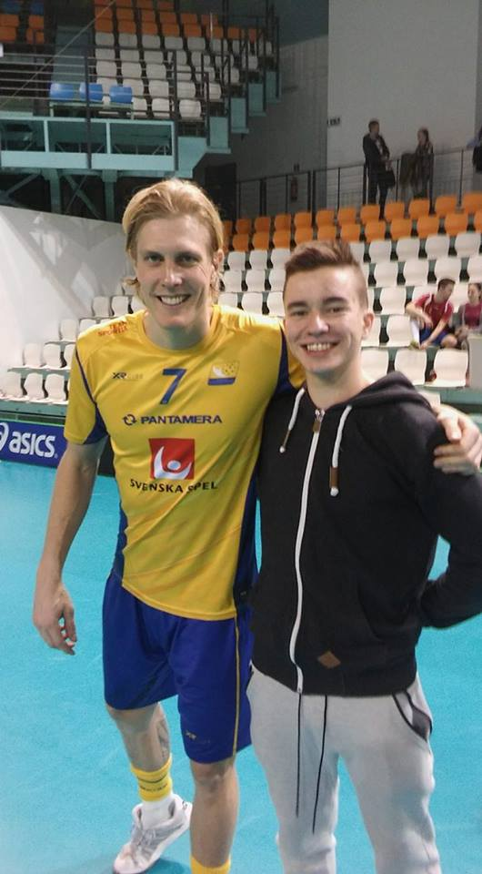

Kim Nilsson , born 1988 , is a Swedish band player . Nilsson's mother club as well as the current club is FBC Kalmarsund . In 2006/2007 he beat the record for the highest number of goals and points in Division 1, with 90 points. After the season, they went up to Svenska Superligan , although the team ended last year in the series and went out, where Nilsson was acquired by AIK . Kim Nilsson won his first World Cup 2012. He was appointed in the final for the match's team and also to the most valuable players in the tournament.On February 27, 2014, it became official that AIK lends Nilsson for two years to the Swiss club Grasshoppers . According to the agreement he has signed, he will return to AIK after the years in Switzerland and will clearly play the rest of his career in the Stockholm team. He will play in Switzerland from the 2014/2015 season. At a press conference on May 6, 2016, it became apparent after a long period of rumors that Kim returns to FBC Kalmarsund for the record amount of 1.4 million. Kim Nilsson , born 1988 , is a Swedish band player . Nilsson's mother club as well as the current club is FBC Kalmarsund . In 2006/2007 he beat the record for the highest number of goals and points in Division 1, with 90 points. After the season, they went up to Svenska Superligan , although the team ended last year in the series and went out, where Nilsson was acquired by AIK . Kim Nilsson won his first World Cup 2012. He was appointed in the final for the match's team and also to the most valuable players in the tournament.On February 27, 2014, it became official that AIK lends Nilsson for two years to the Swiss club Grasshoppers . According to the agreement he has signed, he will return to AIK after the years in Switzerland and will clearly play the rest of his career in the Stockholm team. He will play in Switzerland from the 2014/2015 season. At a press conference on May 6, 2016, it became apparent after a long period of rumors that Kim returns to FBC Kalmarsund for the record amount of 1.4 million.
